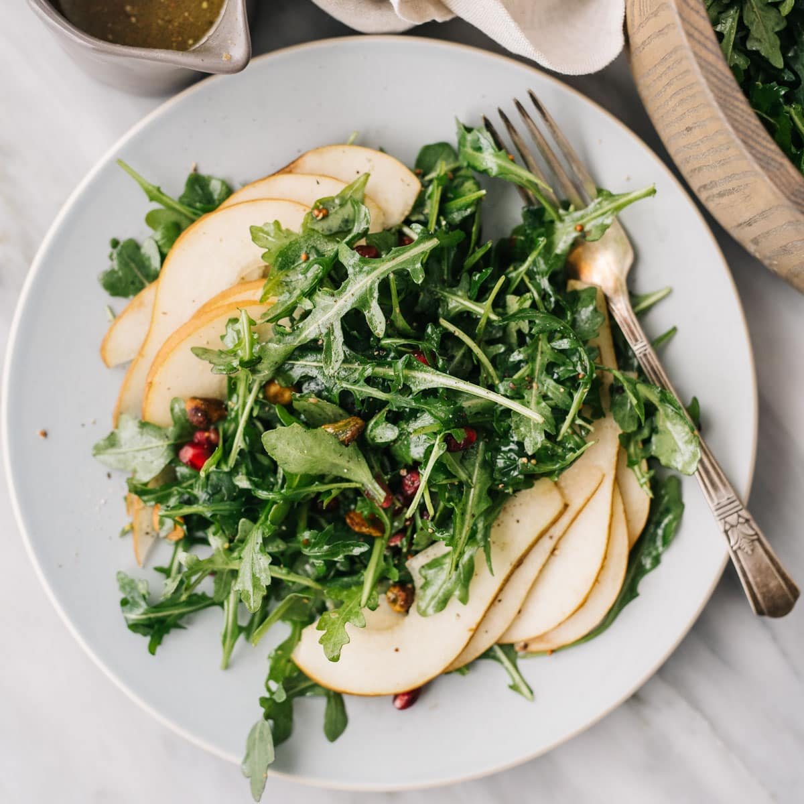

Arugula Salad

Description
This recipe makes a healthy easy salad.
It is a good snack or side dish for a meal.
It has fruits and veggies and lots of flavor.
Ingredients
- 1 bowl fresh arugula
- 15-20 kalamata olive halves
- 3-6 tablespoons feta cheese
- 1 whole pear sliced
- Half a can of cooked chickpeas
- 1 whole fresh lemon
- salt
- freshly ground black pepper
Steps
- Add arugula to bowl
- Add chickpeas on arugula and mix
- Squeeze juice from lemon over salad, sprinkle on some salt and pepper, and mix
- Add olive halves and pear, mix
- Add desired amount of feta to top of salad
- Serve